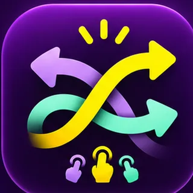

Browser-Test · Prototyp
Fingerchaos
Tippe die richtigen Kreise. Bloß nicht die falschen!
20 SEKUNDEN · SO VIELE TREFFER WIE MÖGLICH
MINT antippen. KORALLE vermeiden (−2 Punkte).
Diese erste Testversion läuft mit einem Finger und speichert deinen Bestwert nur lokal in deinem Browser. Diese Testversion ist noch keine fertige iPhone- oder Android-App. Sie funktioniert ohne Anmeldung und ohne Datenübertragung durch das Spiel.